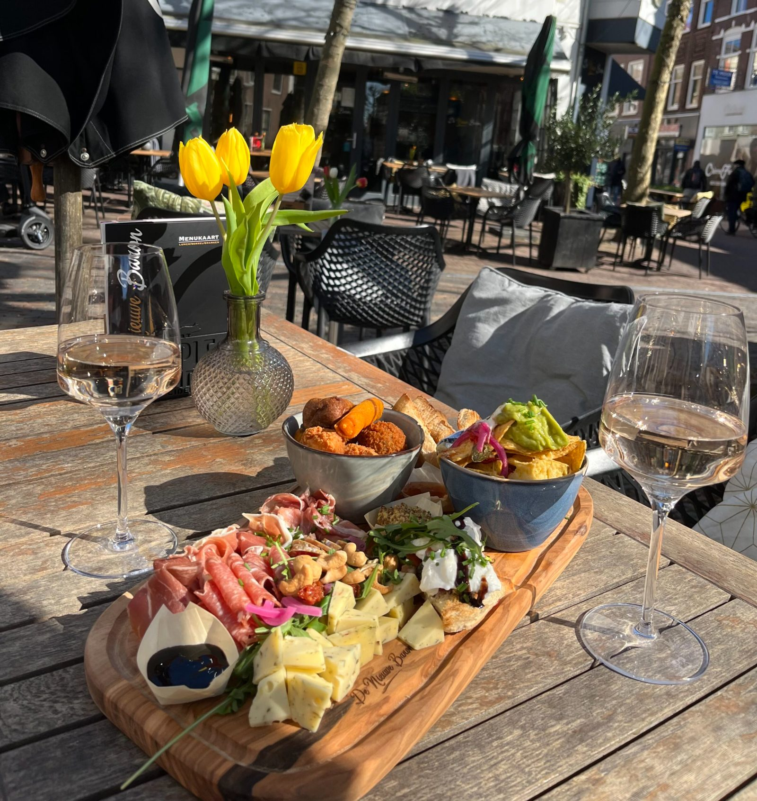
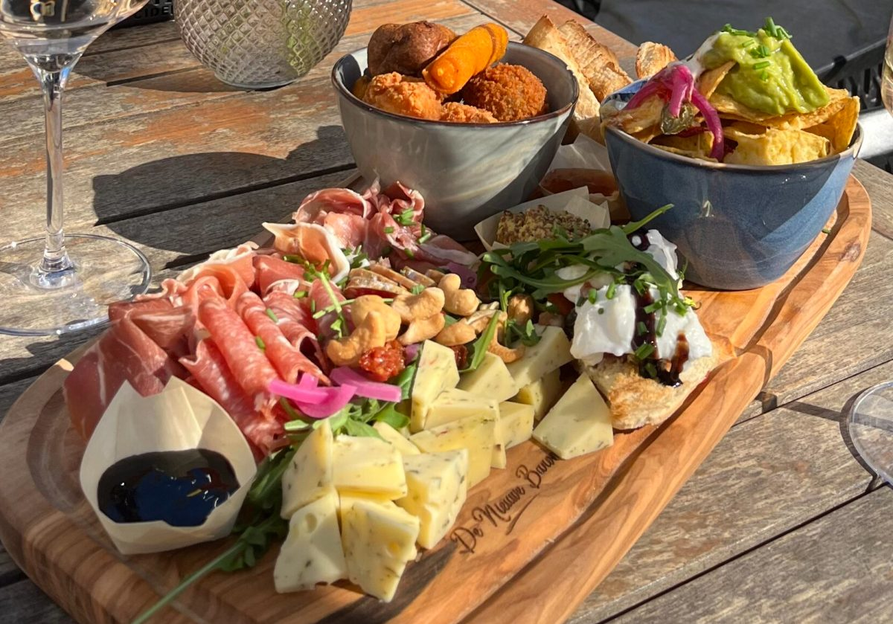
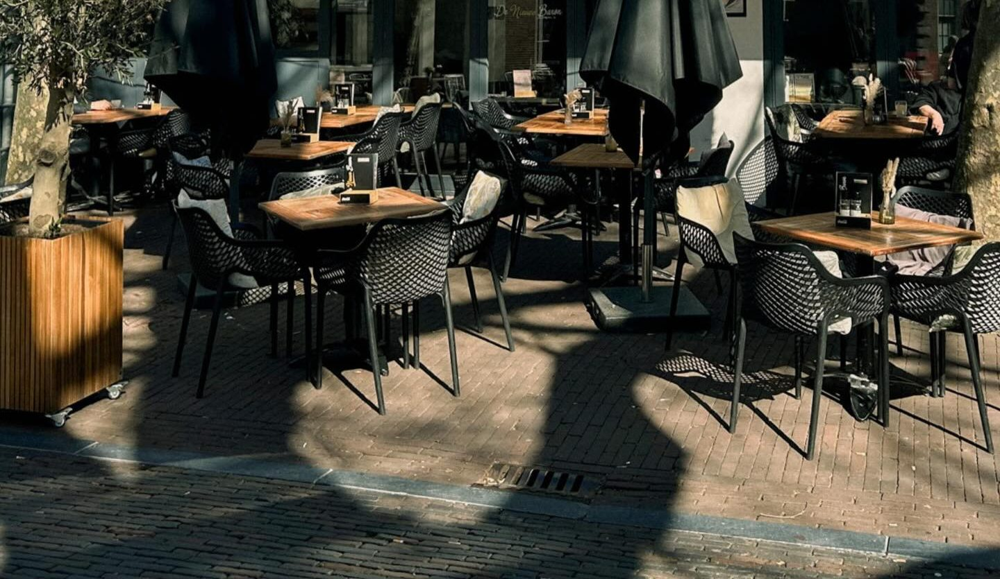

Grote Houtstraat 140, Haarlem
Genieten in het centrum van Haarlem
Een heerlijke lunch of kopje koffie op het terras, en daarna een gezellige borrel met vrienden. Welkom bij De Nieuwe Baron.

Sinds januari 2017 de plek voor lunch, koffie en borrel
Welkom bij De Nieuwe Baron in het gezellige centrum van Haarlem. Sinds januari 2017 de ultieme locatie voor een heerlijke lunch of kopje koffie op het terras en een gezellige borrel met vrienden.
Lunch
Tot 17:00
Broodjes, flaguettes, Baron specials, huisgemaakte soepen en maaltijdsalades. Gerechten met een V zijn vegetarisch te bestellen.
Huisgemaakte tonijnsalade
11,50Italiaanse bol, rode ui, kappertjes, sla, tomaat en augurk
Uitsmijter V
11,50Drie eieren op wit- of bruinbrood. Met kaas, ham en/of bacon: elk +1,00
Warme beenham
13,50Italiaanse bol, rode ui, sla, tomaat, komkommer en honingmosterdsaus
Rundvleeskroket van Oma Bobs
7,001 kroket op wit- of bruinbrood met mosterd-mayo. Met 2 kroketten 13,00
Pulled chicken
15,00Italiaanse bol, kippendijen in hete saus, rode ui, komkommer en gefrituurde ui
Gerookte zalm
16,00Wit- of bruinbrood, wasabi-mayo, rode ui, tomaat, komkommer en kappertjes
Runder carpaccio
16,00Wit- of bruinbrood, truffel-mayo, rode ui, zontomaat, kappertjes en oude kaas
Flaguette kaas en/of ham V
9,50Flaguette mozzarella V
10,50Tomaat en huisgemaakte pesto
Flaguette Hawaii V
10,50Ham, kaas en ananas
Flaguette geitenkaas V
10,50Zongedroogde tomaten, walnoten en honing
Flaguette prosciutto
13,00Rauwe ham, mozzarella en huisgemaakte pesto
Flaguette spianata romana
13,00Italiaanse salami, kaas en huisgemaakte pesto
Broodje Haarlemse gehaktbal
17,00Rundergehakt gegaard in Jopenbier, geserveerd met friet
Broodje warme grillworst met kaas
16,00Sla, tomaat, komkommer, ui en sriracha-mayonaise, geserveerd met zoete-aardappelfriet
Ciabatta burrata V
16,00Burrata, huisgemaakte pesto, tomatensalsa, pijnboompitten en balsamico
Huisgemaakte soepen, met brood
Pompoensoep V
9,50Rode peper, geitenkaas en bieslook
Soep van de dag
9,50Vraag ernaar bij de bediening
Maaltijdsalades, met brood
Caesarsalade
19,50Caesardressing, rode ui, oude kaas, kippendijen, bacon, ei en ansjovis
Carpacciosalade
19,50Truffel-mayo, rode ui, zontomaat, pijnboompitten en oude kaas
Vega salade van de maand V
19,50Vraag ernaar bij de bediening


Borrel
Tot sluit
Van een broodplankje tot het grote plateau voor de hele tafel.

Baron Borrelplank
36,00
Een groot plateau met vleeswaren, kaas, bittergarnituur, nacho's, brood met dips en bruschetta.
Bruschetta, 6 stuks
15,00Ciabatta, prosciutto, burrata en huisgemaakte tomatensalsa
Kaasplankje V
16,00Verschillende kazen met balsamicostroop
Charcuterie
15,00Vleesplankje met droge worst en verschillende soorten vleeswaren
Broodplankje V
8,50Huisgemaakte pesto en aioli
Nacho's V
12,00Chilisaus, kaas, crème fraîche en guacamole
Zoete-aardappelfriet V
10,00Met aioli en truffelmayo
Truffelfriet V
11,00Met Olde Zuivelhoeve-kaas en truffelmayo
Gemengd bittergarnituur, 12 stuks
14,00Bitterballen, kaastengels, kipnuggets en mini-frikandellen
Bitterballen van Oma Bobs, 8 stuks
11,00Met mosterd
Kaastengels, 8 stuks V
11,00Met chilisaus
Groentekroketjes, 8 stuks V
12,00Met aioli
Kipnuggets, 8 stuks
11,00Met sriracha-mayo

Genoeg plekken in de zon
Midden in de Grote Houtstraat, met tafels in de zon. Voor koffie, lunch of het eerste glas van de avond.
Lopend naar de Baron
De Nieuwe Baron zit aan de Grote Houtstraat 140, in het hart van het winkelcentrum van Haarlem.
- Provinciehuis Noord-Holland3 min
- Grote Markt Haarlem5 min
- Gemeente Haarlem10 min
- NS-station Haarlem Centraal15 min
Kom langs
Lunch tot 17:00
Borrelkaart tot sluit
Grote Houtstraat 140
2011 SV Haarlem
023 583 06 38
info@denieuwebaron.nl